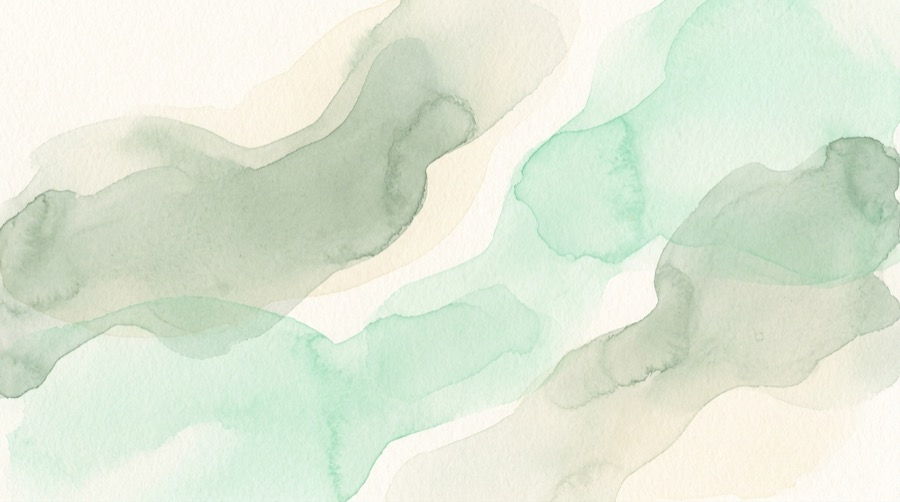

|
A note from Threadline A little more clarity for the days ahead.Welcome to Threadline. We’re glad you’re here. Our resources are designed for real family life: practical, calm and easy to return to when you need them. Start with one question, document or pattern that matters now. You can build the fuller picture over time.
The Threadline team | |
|
A resource to get you started  Questions to discuss with your paediatricianA practical conversation guide to help you prepare, ask useful questions and make the most of your child’s appointment. Read the guide | |
|
Created by clinicians. Designed for real family life. Threadline provides general information and does not replace professional advice. {{company_postal_address}} |